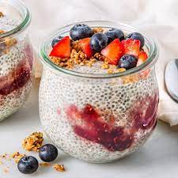

Chia Pudding

Description
Chia Pudding fait à base de graines de chia et de lait d'amende
sera parfait pour faire tenir jusqu'à l'heure du déjeuner
Ingredients
- Graines de chia
- Lait végétal
- Vanille ou canelle
- Sirop d'agave
- Toppings
Etape
- Dans un grand bol mélanger tous les ingrédients
- Verser dans 2 ramequins et laisser reposer au minimun 20mn
- Après verser les toppings de votre choix juste avant de déguster